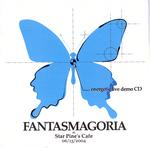

Home Artist links Label link

Fantasmagoria - Energetic Live Demo
| Artist: | Fantasmagoria |
| Title: | Energetic Live Demo |
| Label: | Vital Records VR-016 |
| Length(s): | 19 minutes |
| Year(s) of release: | 2004 |
| Month of review: | [05/2006] |
Line up
Miki Fujimoto - violin
Junpie Ozaki - guitar
Masatomo Nakashima - guitar
Yoichi Suzuki - keyboards
Kentaro Yoshida - bass
Masakazu Sato - drums
Tracks
| 1) | Crusader | 3.44
|
| 2) | Karma | 3.24
|
| 3) | Blue Rice | 3.26
|
| 4) | Over The Line | 3.38
|
| 5) | Epic | 5.12
|
Summary
Recorded live at Star Pine's Cage in Kichiyouji, on June 13 2004.
The music
Crusader opens with sensitive violin and harpsichord, and I am reminded of
Curved Air joined with Renaissance. The guitar work is by comparison rather
heavy, more reminiscent of Focus. The guitar sounds a bit far away, while the violin
sounds quite clear. It is strange, because the way this is usually recorded (live)
one expects it the other way around. The role of the guitar is sometimes handed
over to the keyboardist. Soundwise this isn't perfect, and the drumming tends
to be quite lame, but there is plenty of variation. The end of the song is
definitely more in Canterbury style.
On Karma, the influence is one of seventies King Crimson, when they still had
the violin of David Cross. Although this is supposed to be an energetic live
demo, the music doesn't burst from the speakers. It seems to be in fact that they
are holding themselves in. Rock out, guys!
Blue Rice sounds like proto-prog at first, but the violin is way too lively
and optimistic. In the second half, the guitar roughens it up a bit, and there
is some tension building, but the first half spoiled it for me.
Over The Line is too much in the American jazzrock style for my liking.
Epic is only just over five minutes, but it is the proggiest of the tunes with
plenty of its hallmarks: good organ work, variation in melody and pace, and the
violin and guitar doing alternate leads which adds even more to the variation.
The drummer could be a bit more active though. The second half has a
Camel like interlude with mainly keyboards, and then guitar, all melodic and soft.
Then the music quickly builds up, with the violin doing the work. They could
have a taken a bit longer to expand on this.
Conclusion
Although it sounded nice at the outset, there is a bit too much jazzrock and
straightforwardness here. The music is recorded live, and with a title like this,
I expected this band to shear my ears off. They did not. The violin is the dominant
instrument, so if you happen to be into Ponty and yes, there is some David Cross
here too, then you might want to remember their name. I do wonder what they can
do in the studio. Being more adventurous, as on Epic, would be nice.
© Jurriaan Hage